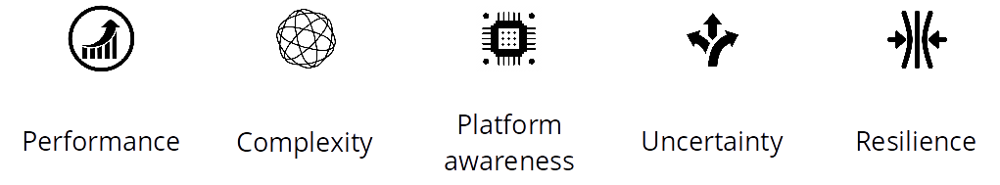
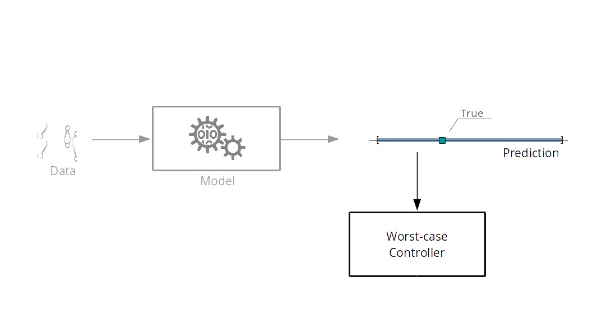
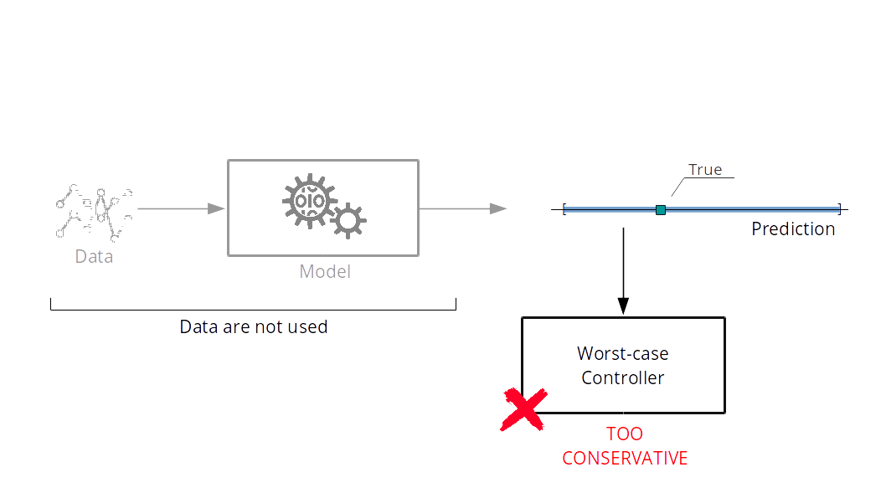
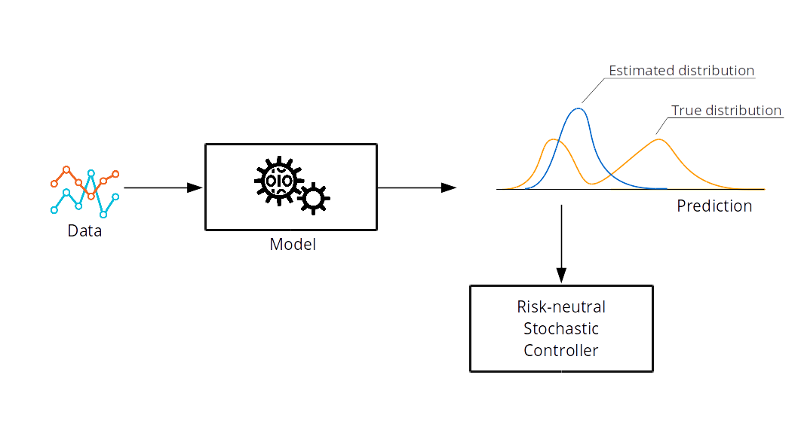

OCL Ensembles for Safe Cobots
Challenges & Objectives
Safe Intelligent Cobots
Challenges

Objectives

|
Learning-based Control
Risk-averse Model Predictive Control
Model Predictive Control
J.B. Rawlings, D.Q. Mayne & M. Diehl,
Model Predictive Control: Theory, Computation, and Design,
Nob Hill Pub., 2009.
Certainty-Equivalent Control


Worst-case Control

Worst-case MPC:
$$
\operatorname*{Minimise}_{u_0,\ldots,u_{N-1}} \operatorname*{max}_{w_0,\ldots, w_{N-1}} \left[
\ell_N(x_N) +
\sum_{t=0}^{N-1} \ell_t(x_t,
u_t, w_t)\right]
$$
subject to the system dynamics and constraints.

Stochastic Control

Stochastic MPC:
$$
\operatorname*{Minimise}_{u_0,\ldots,u_{N-1}} \mathbb{E}_{w_0,\ldots, w_{N-1}} \left[
\ell_N(x_N) +
\sum_{t=0}^{N-1} \ell_t(x_t,
u_t, w_t)\right]
$$
subject to the system dynamics and constraints.

Uncertainty in uncertainty
P. Sopasakis, M. Schuurmans and P. Patrinos, "Safe learning-based risk-averse MPC," IEEE Conf. Decision and
Control, Nice, 2019.
Risk-averse MPC
P. Sopasakis, D. Herceg, A. Bemporad and P. Patrinos,
"Risk-averse model predictive control,"
Automatica 100, pp. 281-288, Feb. 2019.
Numerical Optimisation
Fast Nonconvex Optimisation
E. Small, P. Sopasakis, et al., "Aerial navigation in obstructed environments
with embedded nonlinear model predictive control," IEEE Eur. Control Conf., 2019.
Large-scale GPU-accelerated optimisation
My Research Vision
Safe Intelligent Cobotics
Educational value

Elegant OCL framework
$\Downarrow$
Two textbooks
Research Team
Funding agencies...


|

Two PhD students
+
One postdoc
|